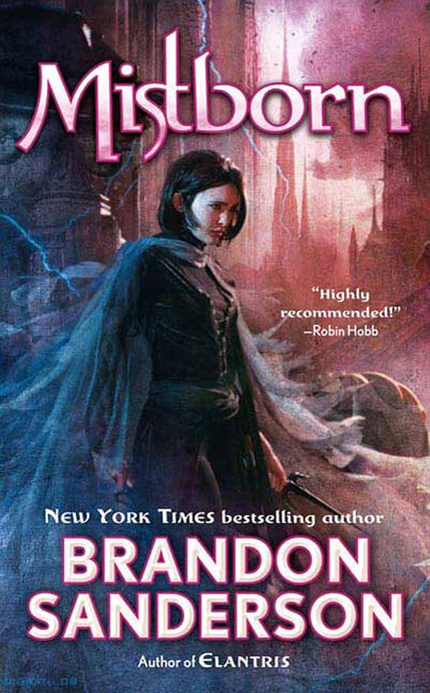
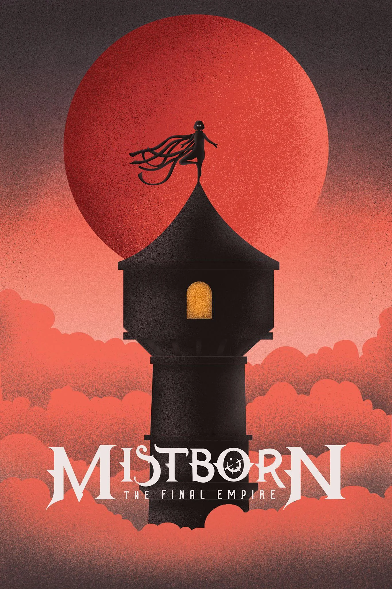
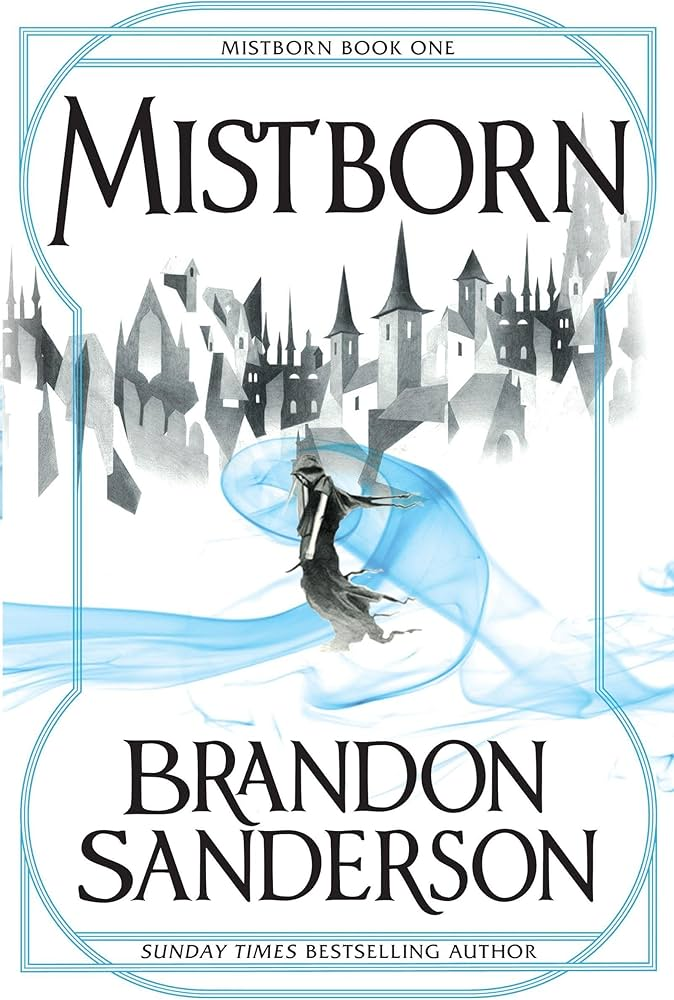
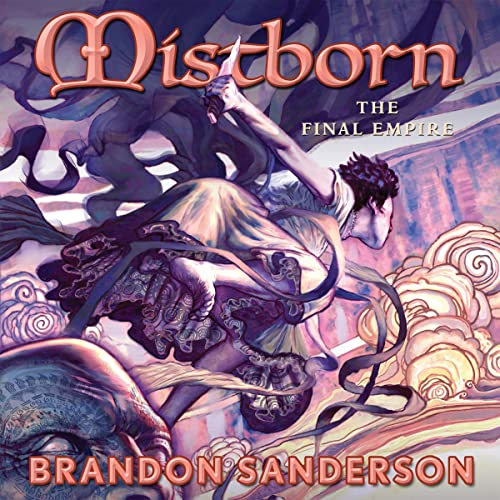

Gallery





In a world where ash falls from the sky and mist dominates the night, a group of rebels known as the "Skaa" plot to overthrow the oppressive Lord Ruler. Vin, a young street urchin with hidden powers, is recruited by Kelsier, a charismatic leader of the rebellion. As they navigate a treacherous landscape of political intrigue and magical abilities, Vin discovers her own strength and the true nature of the Final Empire.
"A thrilling and imaginative fantasy novel that keeps you hooked from start to finish." - Myself
"Brandon Sanderson's world-building is unparalleled, and 'The Final Empire' is a testament to his storytelling prowess." - The entity, Kenny


